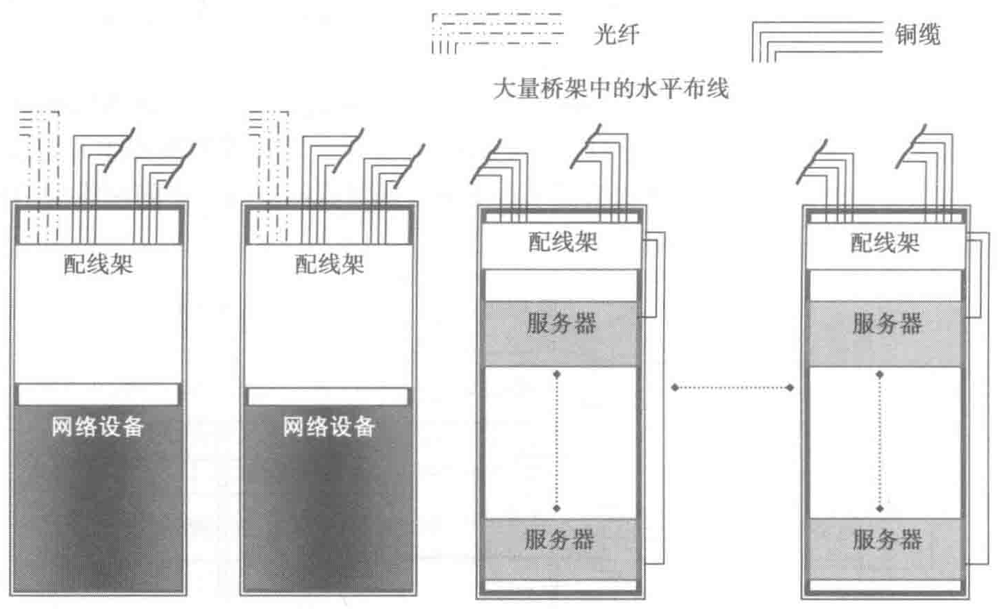
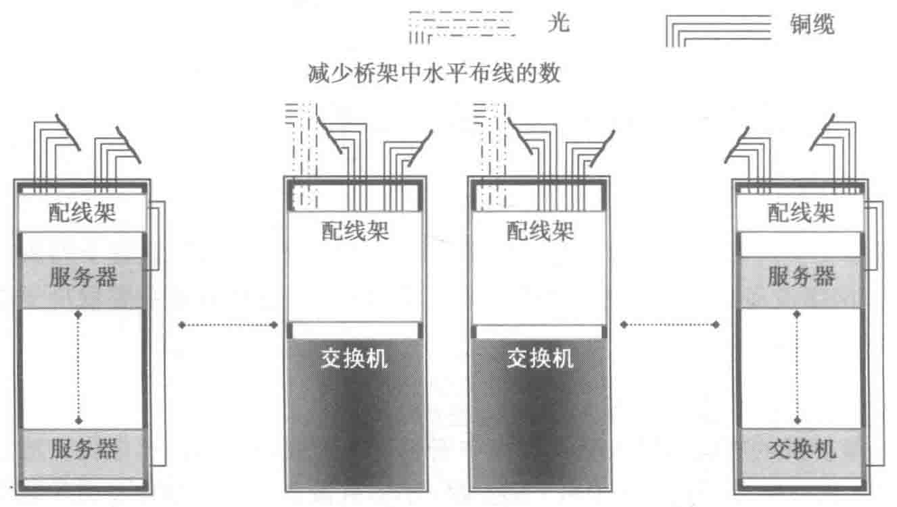

机柜的进风量，影响冷却效果。连接关系如图 7-18 所示。

2. Middle-of-Row/MoR
MoR 的基本概念与 EoR 一样，都是采用交换机来集中支持多个机柜设备的接入。从图 7-19 可以看出，二者的主要区别在于摆放列头机柜的位置，MoR 是将其放在每一列机柜的中间。MoR 的设置方式可以使得缆线从中间位置的列柜向两端布放，降低缆线在布线通道出入口的拥堵现象，并减少缆线的平均长度，也适合实施定制长度的预端接系统，而且对布线机柜内配线设备的交叉连接和管理比 EoR 更方便。连接关系如图 7-19 所示。
